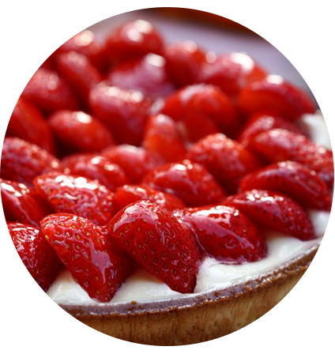
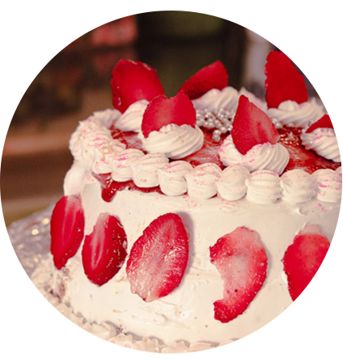
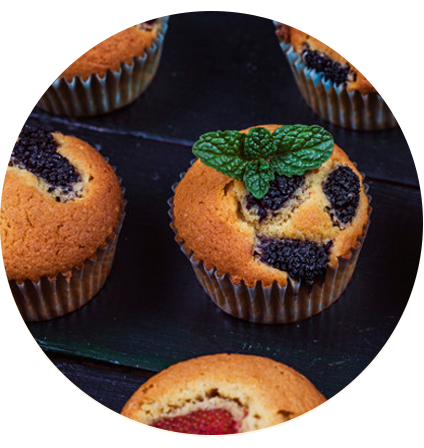
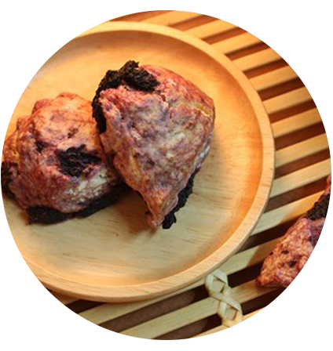

봄
여름
가을
늦가을
Spring menu
딸기, 오디
상큼함의 대명사 딸기!
딸기는 12월~3월까지만 나옵니다.
딸기 타르트
재료 딸기, 박력분, 설탕, 버터, 소금, 계란
버터를 넣어 바삭한 타르트지에
생크림과 딸기가 잔뜩 올라간 딸기 타르트


딸기 케이크
재료 딸기, 박력분, 설탕, 버터, 소금, 계란, 키르슈
제누와즈에 신선한 딸기를 사이사이 넣어
달콤 상콤한 딸기 케이크
새콤 달콤의 대명사 오디!
오디는 5월부터 나옵니다.
오디 머핀
재료 오디, 요구르트, 박력분, 설탕, 버터, 소금, 계란
오디를 넣어 촉촉한 오디 머핀
식사 대용으로 만점


오디 스콘
재료 오디, 박력분, 설탕, 버터, 소금, 계란, 우유
달콤하지만 담백한 오디 스콘
포도와는 다른 향긋함과 바삭함